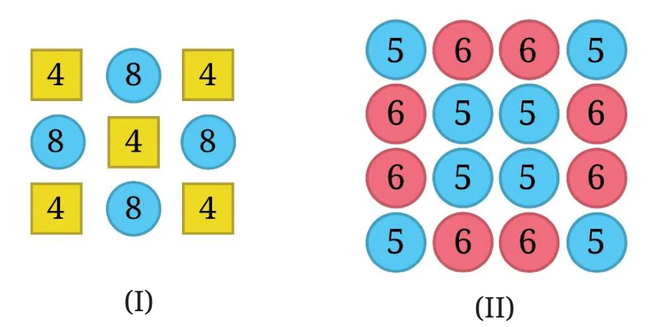

Page No. 41 – 42
- Fill in the blanks with numbers and boxes by signs, so that the expressions on both sides are equal.
- \(3 \times (6 + 7) = 3 \times 6 + 3 \times 7\)
- \((8 + 3) \times 4 = 8 \times 4 + 3 \times 4\)
- \(3 \times (5 + 8) = 3 \times 5 \; \boxed{\phantom{+}} \; 3 \times \underline{\qquad}\)
- \((9 + 2) \times 4 = 9 \times 4 \; \boxed{\phantom{+}} \; 2 \times \underline{\qquad}\)
- \(3 \times (\underline{\qquad} + 4) = 3 \, \underline{\qquad} + \underline{\qquad}\)
- \((\underline{\qquad} + 6) \times 4 = 13 \times 4 + \underline{\qquad}\)
- \(3 \times (\underline{\qquad} + \underline{\qquad}) = 3 \times 5 + 3 \times 2\)
- \((\underline{\qquad} + \underline{\qquad}) \times \underline{\qquad} = 2 \times 4 + 3 \times 4\)
- \(5 \times (9 - 2) = 5 \times 9 - 5 \times \underline{\qquad}\)
- \((5 - 2) \times 7 = 5 \times 7 - 2 \times \underline{\qquad}\)
- \(5 \times (8 - 3) = 5 \times 8 \; \boxed{\phantom{+}} \; 5 \times \underline{\qquad}\)
- \((8 - 3) \times 7 = 8 \times 7 \; \boxed{\phantom{+}} \; 3 \times 7\)
- \(5 \times (12 - \underline{\qquad}) = \underline{\qquad} \; \boxed{\phantom{+}} \; 5 \times \underline{\qquad}\)
- \((15 - \underline{\qquad}) \times 7 = \underline{\qquad} \; \boxed{\phantom{+}} \; 6 \times 7\)
- \(5 \times (\underline{\qquad} - \underline{\qquad}) = 5 \times 9 - 5 \times 4\)
- \((\underline{\qquad} - \underline{\qquad}) \times \underline{\qquad} = 17 \times 7 - 9 \times 7\)
Ans:
(c) \(3 \times (5 + 8) = 3 \times 5 \; \boxed{+} \; 3 \times \underline{8}\)
(d) \((9 + 2) \times 4 = 9 \times 4 \; \boxed{+} \; 2 \times 4\)
(e) \(3 \times (\underline{10} + 4) = 3 \times \underline{10} + \underline{3 \times 4}\)
(f) \((\underline{13} + 6) \times 4 = 13 \times 4 + 6 \times \underline{4}\)
(g) \(3 \times (\underline{5} + \underline{2}) = 3 \times 5 + 3 \times 2\)
(h) \((\underline{2} + \underline{3}) \times \underline{4} = 2 \times 4 + 3 \times 4\)
(i) \(5 \times (9 - 2) = 5 \times 9 - 5 \times \underline{2}\)
(j) \((5 - 2) \times 7 = 5 \times 7 - 2 \times \underline{7}\)
(k) \(5 \times (8 - 3) = 5 \times 8 \; \boxed{-} \; 5 \times 3\)
(l) \((8 - 3) \times 7 = 8 \times 7 \; \boxed{-} \; 3 \times 7\)
(m) \(5 \times (12 - \underline{3}) = 5 \times \underline{12} \; \boxed{-} \; 5 \times \underline{3}\)
(n) \((15 - \underline{6}) \times 7 = \underline{15 \times 7} \; \boxed{-} \; 6 \times 7\)
(o) \(5 \times (\underline{9} - \underline{4}) = 5 \times 9 - 5 \times 4\)
(p) \((\underline{17} - \underline{9}) \times \underline{7} = 17 \times 7 - 9 \times 7\)
[In (e), (m) you may put any number other than 10 and 3 respectively.]
- In the boxes below, fill in ‘<’, ‘>’ or ‘=’ after analysing the expressions on the LHS and RHS. Use reasoning and understanding of terms and brackets to figure this out, and not by evaluating the expressions.
- \((8 - 3) \times 29 \quad \boxed{\phantom{+}} \quad (3 - 8) \times 29\)
- \(15 + 9 \times 18 \quad \boxed{\phantom{+}} \quad (15 + 9) \times 18\)
- \(23 \times (17 - 9) \quad \boxed{\phantom{+}} \quad 23 \times 17 + 23 \times 9\)
- \((34 - 28) \times 42 \quad \boxed{\phantom{+}} \quad 34 \times 42 - 28 \times 42\)
Ans:
(a) \(>\) : since \(8 - 3 > 3 - 8\) (b) \(<\) (c) \(<\) (d) \(=\)
[Try to reason in other parts]
- Here is one way to make 14: \(2 \times (1 + 6) = 14\). Are there other ways of getting 14? Fill them out below:
- \(\underline{\qquad} \times (\underline{\qquad} + \underline{\qquad}) = 14\)
- \(\underline{\qquad} \times (\underline{\qquad} + \underline{\qquad}) = 14\)
- \(\underline{\qquad} \times (\underline{\qquad} + \underline{\qquad}) = 14\)
- \(\underline{\qquad} \times (\underline{\qquad} + \underline{\qquad}) = 14\)
Ans:
(a) \(\underline{2} \times (\underline{5} + \underline{2}) = 14\)
(b) \(\underline{2} \times (\underline{3} + \underline{4}) = 14\)
(c) \(\underline{7} \times (\underline{1} + \underline{1}) = 14\)
(d) \(\underline{2} \times (\underline{6} + \underline{1}) = 14\)
- Find out the sum of the numbers given in each picture below in at least two different ways. Describe how you solved it through expressions.

Ans:
For I: Way1:
\((5 \times 4) + (4 \times 8) = 52\)
Way 2:
\(2 \times (4 + 8 + 4) + (8 + 4 + 8) = 52\)
For II: Way 1:
\((8 \times 5) + (8 \times 6) = 88\)
Way 2:
\(8 \times (5 + 6) = 88\)
Find more ways.